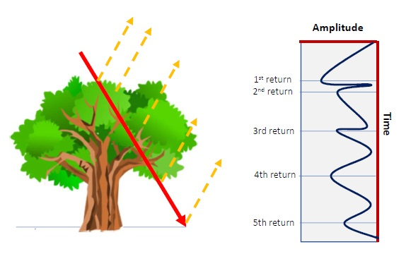
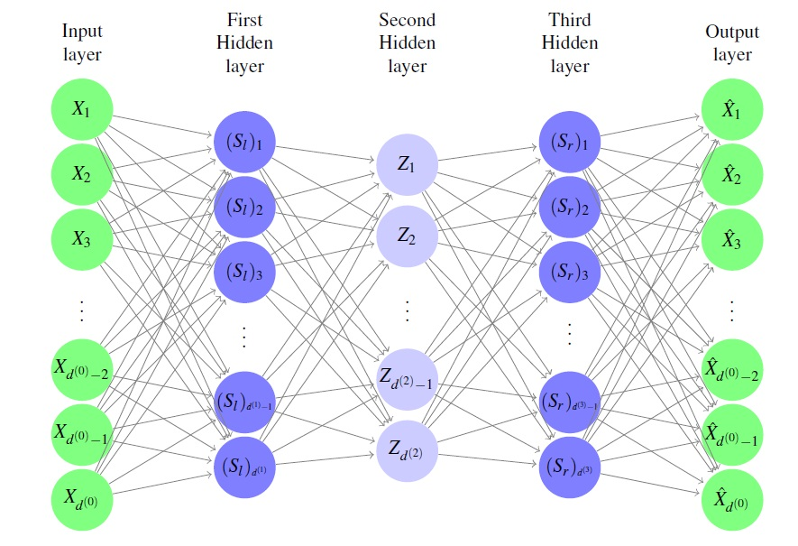
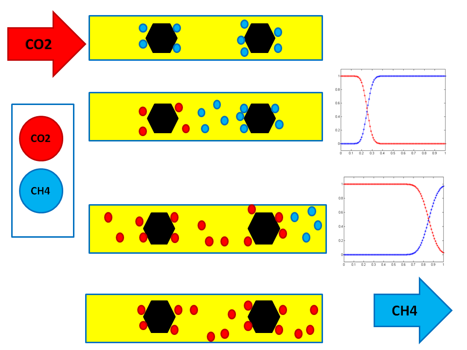

Research
Mathematical frameworks for machine learning; LiDAR/3D point clouds; numerical analysis, PDEs, and functional analysis
My research lies at the intersection of mathematics, machine learning, and scientific computing. I develop mathematically grounded representations and learning methods for high-dimensional and geometric data, with current applications to LiDAR and 3D point-cloud classification. My work draws on ideas from functional analysis, measure theory, dimensionality reduction, and numerical analysis.
My earlier research focused on nonlinear PDEs and numerical methods for porous-media models, particularly methane hydrates and adsorption processes. This background continues to shape my interest in interpretable, structure-aware approaches to complex data and multiscale systems.
Current Research
Machine Learning for Geometric Data and Representation Learning
My current research develops mathematically grounded approaches for machine learning on geometric and high-dimensional data. A recurring theme is the construction of representations that capture meaningful structure in complex datasets while remaining interpretable. This work combines ideas from machine learning, geometry, measure theory, and dimensionality reduction.
A central application area is 3D LiDAR point clouds. These datasets provide detailed geometric descriptions of natural and built environments and arise in applications including forest monitoring, environmental assessment, terrain mapping, and urban analysis. Their scale and geometric complexity make representation and feature design important components of successful learning pipelines.

My work investigates how feature engineering, dimensionality reduction, and machine learning algorithms interact in the classification of LiDAR point clouds. In collaboration with colleagues at Worcester Polytechnic Institute, I have studied classification frameworks that combine local geometric information, engineered features, and learning models including k-nearest neighbors, Random Forests, and neural-network-based methods.
Multiscale Representations and Product Coefficients
One line of research explores product coefficients, multiscale descriptors arising from measure-theoretic representations, as features for machine learning. My work investigates how these coefficients can be adapted to local neighborhoods in point-cloud data and incorporated into learning pipelines. They provide information about local geometric organization at multiple scales and complement traditional spatial attributes.
$$ a_S = \frac{\mu(L(S))-\mu(R(S))} {\mu(L(S))+\mu(R(S))} $$Here \(a_S\) denotes a product coefficient associated with a dyadic set \(S\), while \(L(S)\) and \(R(S)\) denote its dyadic children. Collections of these coefficients encode multiscale information about the distribution of mass within local neighborhoods and can be used as geometric descriptors for machine learning tasks.
Dimensionality Reduction and Dynamical Representations

A second direction studies dimensionality reduction and representation learning. I have investigated both classical approaches such as Principal Component Analysis (PCA) and nonlinear representations based on autoencoders. Recent work examines how product coefficients and learned latent representations interact with downstream classification, as well as how architectural choices affect the information retained in hidden representations.
Current projects also investigate dynamical autoencoder architectures, including the behavior of hidden states under repeated transformations. In particular, I am interested in understanding when iterative architectures preserve informative geometric structure and when their representations collapse toward low-variability states.
More broadly, my goal is to understand how mathematically interpretable representations can complement modern machine learning methods for scientific datasets with complex geometric and multiscale structure.
Mathematical Foundations and Earlier Research
Functional Analysis
My early research was in functional analysis, particularly Banach function spaces and Orlicz spaces. This work developed my interest in how analytic structure can be used to understand complex spaces and operators. Ideas from functional analysis continue to influence how I approach representation, dimensionality, and mathematical structure in current computational problems.
Methane Hydrates and Phase Transitions in Porous Media
My doctoral and early postdoctoral research included mathematical models for methane hydrate formation and dissociation in porous media. Methane hydrates are ice-like crystalline structures that form under conditions of high pressure and low temperature and are of interest in both energy and environmental applications.
The mathematical models involve nonlinear partial differential equations with phase transitions and solubility constraints. A representative formulation is
$$ \frac{\partial u}{\partial t} -\nabla\cdot\big(D\nabla \chi\big) = f, \qquad \chi \in \alpha(x,u), \qquad u=\chi S+R(1-S). $$Here \(u\) represents total methane content, while the multivalued relation \(\alpha(x,u)\) captures the phase transition associated with dissolved methane and methane hydrate.
In collaboration with colleagues at Oregon State University, I studied well-posedness, comparison principles, and numerical approximation for this class of models using techniques from nonlinear PDEs, monotone operator theory, convex analysis, and numerical analysis.
Adsorption Models and Non-Equilibrium Kinetic Systems

I have also worked on mathematical models for adsorption processes in porous media, motivated by applications including coalbed methane recovery, contaminant transport, and multicomponent gas displacement. These models couple transport of mobile chemical components with adsorption onto a solid matrix.
In collaboration with Dr. Malgorzata Peszynska, I studied stability of numerical schemes for non-equilibrium kinetic systems. A central idea was to formulate the coupled problem in appropriately weighted spaces, revealing a symmetric structure that permits stability analysis for implicit, explicit, and implicit-explicit discretizations.
This research brought together nonlinear transport, adsorption kinetics, numerical analysis, stability theory, and porous-media modeling. These themes continue to inform my interest in reduced models and data-driven approaches for complex multiscale systems.